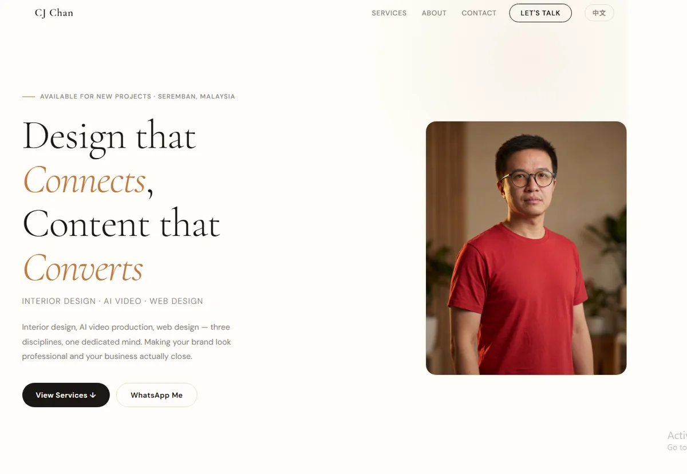
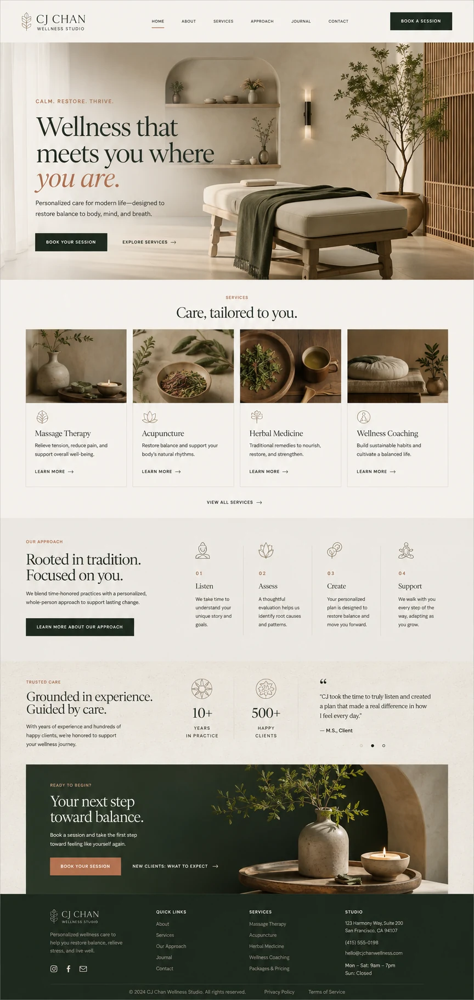
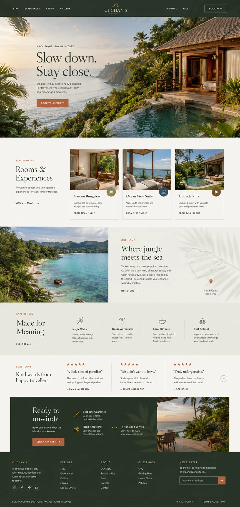
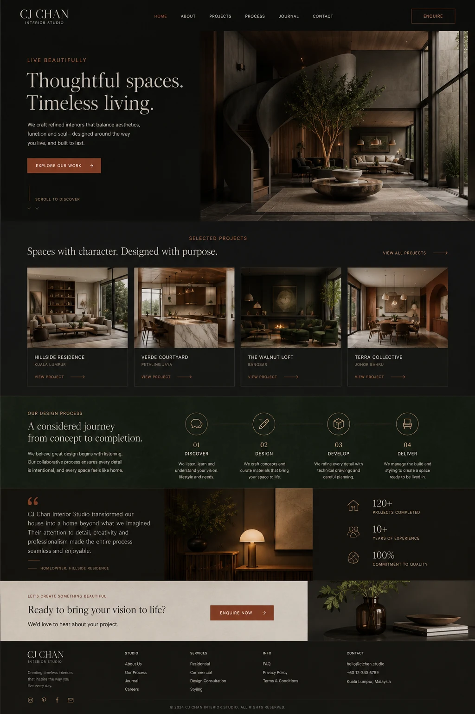
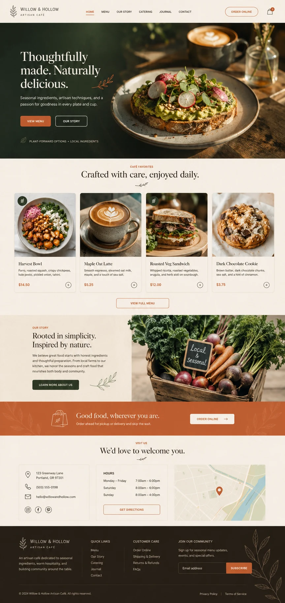

Web Design
Websites you can compare,
not just imagine.
网站好不好，
看得到。
A clearer structure, visual direction and responsive build—shown through real before-and-after work.
用真实的前后对比，展示更清楚的结构、视觉方向和响应式网站。
Before → After
CJ Personal Website,
rebuilt.
CJ 个人网站，
重新建立。
Tap either card to open the comparison. The Before side is the confirmed cj-chan.work homepage capture; scroll the V2 panel to inspect the new full layout.
点任一张卡即可打开对比。左边是已确认的 cj-chan.work 旧版首页截图；右边可向下滑动查看新 V2 的完整排版。
Website demos
Four website directions.
四个网站方向。
Four image-generated homepage layouts, all clearly marked as self-initiated concepts — never client work.
四个以图像生成的首页排版，全部清楚标示为自营概念，不当作客户案例。

Wellness Studio
疗愈工作室网站
A calm, booking-led service homepage.
安静、有预约引导的服务型首页。

Boutique Stay
精品旅宿网站
An immersive destination and booking layout.
沉浸式目的地与订房首页排版。

Interior Studio
室内设计工作室
A dark editorial portfolio for spatial work.
以空间作品为重点的深色编辑式首页。

Artisan Food Brand
餐饮零售品牌
A product-and-order layout for a local business.
面向本地生意的产品与下单首页。
Process
A simple, visible process.
简单、看得见的过程。
The work moves from business clarity to a tested, responsive page—not just a prettier screen.
从业务重点到实际测试过的响应式页面，不只是把画面做漂亮。
Discover
Goals, audience and the current page.
目标、受众与现有页面。
Define
Structure, message and next action.
结构、信息与下一步。
Create
Visual system, assets and responsive build.
视觉系统、素材与响应式制作。
Deliver
Device checks and clear handover.
设备检查与清楚交接。